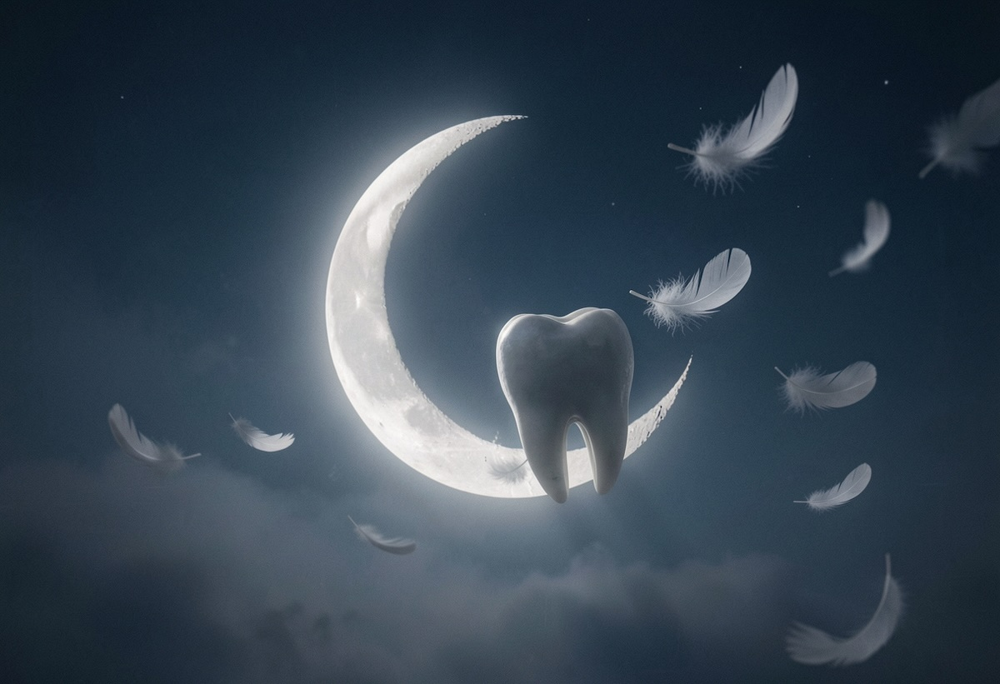

Rüyada Diş Düşmesi Ne Anlama Gelir?
Rüyalar, bilinçaltımızın yansımaları ve çoğu zaman psikolojik durumumuzun bir göstergesi olarak görülür. Bunlardan biri de en yaygın rüyalardan olan “diş düşmesi” rüyasıdır. Birçok kişi bu rüyayı gördükten sonra endişe duyar ve anlamını merak eder. Peki, rüyada diş düşmesi ne anlama gelir?
Genel Anlamları
Rüyada dişlerin düşmesi, farklı inanç ve yorumlara göre çeşitli anlamlara gelebilir. Bunlar arasında şunlar bulunur:
- Kayıp ve Yas: Geleneksel rüya tabirlerine göre diş düşmesi, aile veya çevreden birinin kaybıyla ilişkilendirilebilir.
- Stres ve Kaygı: Modern psikolojiye göre ise diş düşmesi, bireyin hayatında stresli bir dönemden geçtiğine işaret edebilir.
- Değişim ve Dönüşümler: Bir diğer yaygın yorum ise yaşamda büyük bir değişikliğe veya yeni bir döneme girildiğine işaret ettiğidir.
Rüya Psikolojisi ve Bilinçaltı Yorumları
Rüya analistleri ve psikologlara göre diş düşmesi, bilinçaltımızdaki korkuların, endişelerin ve özellikle de kontrol kaybı hissinin bir yansıması olabilir. Özellikle değişim süreci içinde olan bireylerde bu tür rüyaların daha sık görüldüğü belirtilmektedir.
Farklı Kültürlerde Rüya Yorumları
Dünya çapında farklı kültürlerde diş düşmesi rüyasına çeşitli anlamlar yüklenmektedir:
- Doğu Kültürleri: Diş düşmesi genellikle uğursuzluk veya yaşamda büyük bir kayıba işaret eder.
- Batı Psikolojisi: Bu rüya genellikle kişinin kendine olan güvensizliğini ve yaşam kontrolünü kaybetme korkusunu simgeler.
- Eski Mısır ve Yunan Mitolojisi: Diş düşmesi rüyaları, ömrün uzaması ya da bireyin yeni bir bilgelik kazanması olarak yorumlanmıştır.
Rüya Senaryoları ve Detaylı Yorumlar
Rüyanın detayları, yorumlamada çok önemlidir.
- Tüm dişlerin dökülmesi: Güvensizlik, büyük bir kayıp ya da ciddi bir özsaygı problemi yaşandığını gösterebilir.
- Bir dişin düşmesi: Özel hayatta ya da iş yaşamında önemli bir değişiklik yaşama işarettir.
- Dökülen dişlerin tekrar yerine gelmesi: Zor bir dönemin geride kalacağına ve kaybedilen bir şeyin yerine daha iyisinin gelebileceğine işaret edebilir.
Rüya Analizi ve Sonuç
Sonuç olarak, rüyada diş düşmesi genellikle bireyin bilinçaltındaki korkularını, değişim sürecini ya da yaşamındaki baskıları yansıtan bir semboldür. Bu rüyayı gören kişinin yaşamında neler olup bittiğini değerlendirmesi, duygusal durumunu analiz etmesi önerilir.
Eğer bu tür rüyalar sıklıkla tekrarlanıyorsa, kaygı seviyesini düşürmek için meditasyon, psikolojik destek veya gevşeme tekniklerinden faydalanmak iyi bir adım olabilir. Unutmayın, rüyalar sadece bilinçaltımızın mesajlarıdır ve önemli olan onlardan doğru çıkarımlar yapabilmektir.